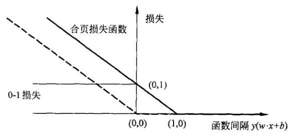

支持向量机(support vector machines,SVM)是一种二类分类模型。它的基本模型是定义在特征空间上的间隔最大的线性分类器(间隔最大使它有别于感知机)。
核技巧使得SVM称为一个非线性分类器。
学习策略是间隔最大化。通过形式化为一个求解凸二次规划的问题。等价于正则化的合页损失函数的最小化问题。
总而言之，支持向量机的学习算法是求解凸二次规划的最优化算法。
支持向量机学习算法包含构建由简至繁的模型：
线性可分支持向量机(硬间隔)
当训练数据线性可分时，通过硬间隔最大化，学习一个线性的分类器，即线性可分支持向量机，又称为硬间隔支持向量机。
线性支持向量机(软间隔)
当训练数据近似线性可分时，通过软间隔最大化，学习一个线性的分类器，即线性支持向量机，又称为软间隔支持向量机。
非线性支持向量机(核技巧SVM)
当训练数据线性不可分时，通过使用核技巧及软间隔最大化，学习非线性支持向量机。
当输入空间为欧式空间或离散集合，特征空间为希尔伯特空间时，核函数表示将输入从输入空间映射到特征空间得到的特征向量之间的内积。
通过使用核函数来学习非线性支持向量机，等价于隐式地在高维的特征空间中学习线性支持向量机。
核技巧是比支持向量机更为一般的机器学习方法。
支持向量机的学习是在特征空间进行的。
8.1线性可分支持向量机与硬间隔最大化
8.1.1 线性可分支持向量机
给定一个特征空间上的训练数据集
其中，，，为第i个特征向量，也称为实例，为的类标记，当时，称为正例；当时，称为负例。为样本点。
假设训练数据集是线性可分的。
学习目标是在特征空间中找到一个分离超平面，能将实例分到不同的类，分离超平面对应于方程w.x+b=0，它由法向量w和截距b决定，可以(w,b)来表示。分离超平面将特征空间划分为两部分，一部分是正类，一部分是负类。法向量指向的一侧为正类，另一侧为负类。
一般地，当训练数据集线性可分时，存在无穷个分离超平面可将两类数据正确分类。
对于感知机利用误分类最小的策略，求解的分离超平面，有无数个解。
对于线性可分支持向量机利用间隔最大化策略，求解最优的分离超平面，解是唯一的。
定义8.1(线性可分支持向量机)给定线性可分训练数据集，通过间隔最大化或等价地求解相应的凸二次规划问题学习得到的分离超平面为:
以及相应的分类决策函数:
称为线性可分支持向量机。
8.1.2 函数间隔和几何间隔
定义8.2(函数间隔) 对于给定的训练数据集T和超平面(w,b)，定义超平面(w,b)关于样本点的函数间隔为
定义超平面(w,b)关于训练数据集T的函数间隔为超平面(w,b)关于T中所有样本点的函数间隔之最小值，即
函数间隔可以表示为分类预测的正确性及确信度。
但是，如果成比例地改变w，b(如w->2w,b->2b)，超平面并没有改变，但是函数间隔却变成了原来的两倍。为了解决这个问题，我们可以对分离超平面的法向量w加某些约束，如规范化，。使得间隔是确定的。这时函数间隔成为几何间隔。
定义8.3(几何间隔)对于给定的训练数据集T和超平面(w,b)，定义超平面(w,b)关于样本点的几何间隔为:
定义超平面(w,b)关于训练数据集T的几何间隔为超平面(w,b)关于T中所有样本点的几何间隔之最小值，即:
根据函数间隔和几何间隔的定义可知，如果，函数间隔与几何间隔相等。
8.1.3硬间隔最大化
对于线性可分的训练数据集而言，硬间隔最大化的直观解释是:对训练数据集找到几何间隔最大的超平面意味着以充分大的确信度对训练数据进行分类。
最大间隔分离超平面
求最大间隔分离超平面问题可以表示为下面的约束最优化问题:
根据几何间隔与函数间隔的关系，上面的约束最优化问题可以改写成一下形式:
事实上，假设将w和b按比例改变为和，这时函数间隔成为，由此可以看出函数间隔的这一改变对上面最优化问题的不等式约束没有影响，对目标函数的优化也没有影响。也就是说，=1，也对不等式约束没有影响。同时，最大化和最小化是等价的。
综上所述，可将上面的最优化问题进一步的调整成如下形式:
这是一个凸二次规划问题。
凸优化问题是指约束最优化问题:
其中，目标函数和约束函数都是上的连续可微的凸函数，约束函数是上的仿射函数。
当目标函数是二次函数且约束函数是仿射函数时，上述凸最优化问题成为凸二次规划问题。
算法8.1(线性可分支持向量机学习算法——最大间隔法)
输入:线性可分训练数据集，其中，；
输出:最大间隔分离超平面和分类决策函数。
(1)构造并求解约束最优化问题:
求得最优解。
(2)由此得到分离超平面:
分类决策函数:
最大间隔分离超平面的存在唯一性
定理8.1(最大间隔分离超平面的存在唯一性)若训练数据集T线性可分，则可将训练数据集中的样本点完全正确分开的最大间隔分离超平面存在且唯一。
证明:
(1)存在性
- 训练数据集线性可分=>存在可行解
- 目标函数有下界=>必有解
(2)唯一性
假设问题(8.13)(8.14)存在两个最优解和。显然，其中c是一个常数。
令，，易知(w,b)是问题(8.13)(8.14)的可行解(满足约束条件)。从而有:
分解：
对于 是因为目标函数求得得解为，所以对于其他非最优解，其二范数必然大于c。
根据w的定义，可以得到
上式表明，式中的不等号可变为等号，即，由式(0)以及w取值表达式，可以得到，从而有(两个向量共线,模相等，因此)，则有以下两种情况:
，则w=0，而(0,b)不是问题(8.13)(8.14)的可行解。
w的唯一性得证。
接下来，证明b的唯一性:
设和是集合中分别对应于和使得问题的不等式等号成立的点。和是集合中分别对应于和使得问题的不等式等号成立的点。
由，，得
又因为:
所以，。同理有。因此，
由和可知，两个最优解和是相同的，解的唯一性得证。
(3)分离超平面能将训练数据集集中的两类点完全正确地分开
由解满足问题的约束条件即可得知。
支持向量和间隔边界
定义(支持向量)支持向量是使约束条件式(8.14)等号成立的点，即
如上图所示，超平面上的样本点为支持向量。而和之间的距离称为间隔(margin)。间隔依赖于分离超平面的法向量w，等于，和称为间隔边界。
在决定分离超平面时，只有支持向量起作用，而其他实例点并不起作用。如果移动支持向量将改变所求的解。
8.1.4 学习的对偶算法
线性可分支持向量机的最优化问题(8.13)(8.14)为原始最优化问题，应用拉格朗日乘子得到对偶问题，通过求解对偶问题得到原始问题的最优解，这就是线性可分支持向量机的对偶算法。
这样做的优点:
- 对偶问题往往更容易求解
- 自然引入核函数
首先构建拉格朗日函数，为此，对每个不等式约束(8.14)引进拉格朗日乘子，i=1,2,…,N，定义拉格朗日函数:
原始问题定义为:
根据拉格朗日对偶性，原始问题的对偶问题是极大极小问题:
所以，对偶问题的求解步骤为，先求对w,b的极小，再求对的极大。
(1)求
将拉格朗日函数分别对w,b求偏导数并令其等于0.
得
将式(8.19)代入拉格朗日函数(8.18)，并利用式(8.20)，即得：
即
(2)求对的极大，即是对偶问题:
将式(8.21)的目标函数由求极大转成求极小，就得到下面与之等价的对偶最优化问题:
原始问题满足KKT条件，所以存在，，使是原始问题的解，是对偶问题的解。这意味着求解原始问题(8.13)~(8.14)可以转换为求解对偶问题(8.22)~(8.24)。
定理8.2 设是对偶最优化问题(8.22)~(8.24)的解，则存在下标j，使得，并可按下式求得原始最优化问题(8.13)~(8.14)的解,:
证明：按照KKT条件成立，即得：
由此得:
其中至少有一个(用反证法，假设，由式(8.27)可知，而不是原始最优化问题(8.13)~(8.14)的解，产生矛盾)，对此j有:
将式(8.25)代入式(8.28)并注意到，即得：
由此定理可知，分离超平面可以写成:
分类决策函数可以写成：
这就是说，分类决策函数只依赖于输入x和训练样本输入内积。式(8.30)称为线性可分支持向量机的对偶形式。
算法8.2(线性可分支持向量机学习算法):
输入:线性可分训练集，其中，i=1,2,…,N；
输出:分离超平面和分类决策函数。
(1)构造并求解约束最优化问题
求得最优解。
(2)计算
并选择的一个正分量，计算：
(3)求得分离超平面
分类决策函数:
在线性可分支持向量机中，由式(8.25)、式(8.26)可知，和只依赖于训练数据中对应于的样本点，而其他样本点对和没有影响。
我们将训练数据中对应于的实例点称为支持向量。
定义8.4(支持向量)考虑原始最优化问题(8.13)~(8.14)及对偶最优化问题(8.22)~(8.24)，将训练数据集中对应于的样本点的实例称为支持向量。
根据这一定义，支持向量一定在间隔边界上，由KKT互补条件可知，
对应于的实例，有：
或
即一定在间隔边界上。这里的支持向量的定义与前面给出的支持向量的定义是一致的。
对于线性可分问题，上述线性可分支持向量机的学习(硬间隔最大化)算法是完美的。
但是，在现实问题中，训练数据集往往是线性不可分的，即在样本中出现噪声或离群点，此时，有更一般的学习算法。
8.2 线性支持向量机与软间隔最大化
8.2.1 线性支持向量机
线性可分支持向量机学习算法的局限性：对线性不可分训练数据是不适用的，因为这时上述方法中的不等式约束并不能都成立。
假设给定一个特征空间上的训练数据集
其中，，，i=1,2,…,N，为第i个特征向量，为的类标记。
再假设训练数据集不是线性可分的。通常情况是训练数据中有一些特异点(outlier)，将这些特异点除去后剩下大部分的样本点组成的集合是线性可分的。
线性不可分意味着某些样本点不能满足函数间隔大于等于1的约束条件(8.14)。
解决方案:为了解决这个问题，可以对每个样本点引进一个松弛变量，使得函数间隔加上松弛变量大于等于1(满足不等式约束条件)。这样，约束条件变为:
同时，对每个松弛变量，支付一个代价。目标函数由原来的变成:
这里，称为惩罚参数，一般由应用问题决定，C值大时对误分类的惩罚增大，C值小时对误分类的惩罚减小。最小化目标函数(8.31)包含两层含义:使尽量小即间隔尽量大，同时使误分类点的个数尽量小，C是调和二者的系数。
相应于硬间隔最大化，它称为软间隔最大化。
线性不可分的线性支持向量机的学习问题变成如下凸二次规划问题(原始问题)：
原始问题(8.32)~(8.34)是一个凸二次规划问题，因而关于的解是存在的。可以证明w的解是唯一的，但b的解可能不唯一，而是存在于一个区间(参考《邓乃扬，田英杰。数据挖掘中的新方法——支持向量机。北京:科学出版社，2004》)。
定义8.5(线性支持向量机)对于给定的线性不可分的训练数据集，通过求解凸二次规划问题，即软间隔最大化问题(8.32)~(8.34)，得到的分离超平面为:
以及相应的分类决策函数:
称为线性支持向量机。
8.2.2 学习的对偶算法
此章节主要是演算如何通过原始问题推出对偶问题，从而证明原始问题与对偶问题是等价的。
在对偶问题中，原始问题中引入的辅助变量，已经消去。
原始问题(8.32)~(8.34)的对偶问题是:
由此，可得对应的拉格朗日函数为:
其中，。
对对偶问题进行求解:
(1)首先求对w,b,的极小，由:
得
将式(8.41)~(8.43)代入式(8.40)，得:
(2)再对求的极大，即得对偶问题:
将对偶最优化问题(8.44)~(8.48)进行变换:利用等式约束(8.46)消去，从而只留下变量，并将约束(8.46)~(8.48)写成：
将对目标函数求极大转换为求极小，于是得到对偶问题(8.37)~(8.39)。
定理8.3设是对偶问题(8.37)~(8.39)的一个解，若存在的一个分量，，则原始问题(8.32)~(8.34)的解，可按下式求得:
证明:原始问题是凸二次规划问题，解满足KKT条件。即得：
由式(8.52)易知式(8.50)成立。
由式(8.53)~(8.54)可知，若存在，，则。由此即得式(8.51)。
由此定理可知，分离超平面可以写成:
分类决策函数可以写成:
式(8.56)为线性支持向量机的对偶形式。
算法8.3 (线性支持向量机学习算法)
输入：训练数据集，其中，，，i=1,2,…,N；
输出:分离超平面和分类决策函数。
(1)选择惩罚参数C > 0，构造并求解凸二次规划问题
求得最优解。
(2)计算
选择的一个分量适合条件，计算:
(3)求得分离超平面
分类决策函数:
步骤(2)中，对任一适合条件的，按式(8.51)都可求出，从理论上，原始问题(8.32)~(8.34)对b的解可能不唯一，然而在实际应用中，往往只会出现算法叙述的情况。
8.2.3 支持向量
在线性不可分的情况下，将对偶问题(8.37)~(8.39)的解中对应于的样本点的实例称为支持向量(软间隔的支持向量)。
如下图所示，分离超平面由实线表示，间隔边界由虚线表示，正例点由”。”表示，负例点由”x”表示。图中还标出了实例到间隔边界的距离。

软间隔的支持向量或者在间隔边界上，或者在间隔边界与分离超平面之间，或者在分离超平面误分一侧。
- 若，则，支持向量恰好落在间隔边界上；
- 若，，则分类正确，在间隔边界与分离超平面之间
- 若，则在分离超平面上
- 若，则位于分离超平面误分一侧
8.2.4 合页损失函数
对应线性支持向量机学习来说，(1)模型为分离超平面及决策函数，(2)学习策略为软间隔最大化，学习算法为凸二次规划。
线性支持向量机学习还有另外一种解释，就是最小化以下目标函数：
目标函数的第一项是经验损失或经验风险，函数
称为合页损失函数。下标”+”表示以下取正值的函数。
也就是说，当样本点被正确分类且函数间隔(确信度)大于1时，损失是0；否则损失是。
目标函数的第二项是系数为的w的范数，是正则化项。
定理8.4 线性支持向量机原始最优化问题:
等价于最优化问题:
证明：可将最优化问题(8.63)写成问题(8.60)~(8.62)。令
则，式(8.62)成立。
由式(8.64)可得：
- 当时，有
- 当时，，有。
综上所述，式(8.61)成立。
于是，w,b,满足约束条件(8.61)~(8.62)。所以最优化问题(8.63)可写成:
若取，则：
与式(8.60)等价。
反之，也可将最优化问题(8.60)~(8.62)表示成问题(8.63)。
合页损失函数的图形如图8.6所示，

图中一共有三种损失函数，
- 0-1损失函数，对于正确分类的样例(即y(w.x+b)>0)，损失为0,而错误分类的样例(即y(w.x+b)<0)，损失为1。
- 感知机损失函数，当样本点被正确分类时(y(w.x+b)>=0)，损失为0，而错误分类的样例[y(w.x+b)<0]，损失为。
- 合页损失函数，比感知机损失函数更加严格，当样本点被正确分类且函数间隔必须大于1的时候(即y(w.x+b)>1)，损失为0，而错误分类的样例(y(w.x+b)<=1)，损失为1-y(w.x+b)。
总结
线性可分支持向量机与线性支持向量机的目标函数的区别在于：线性支持向量机多了一个约束条件。
为线性支持向量机中的惩罚系数：
- C值大时，对误分类的惩罚增大(对应着限制变大)
- C值小时，对误分类的惩罚减小